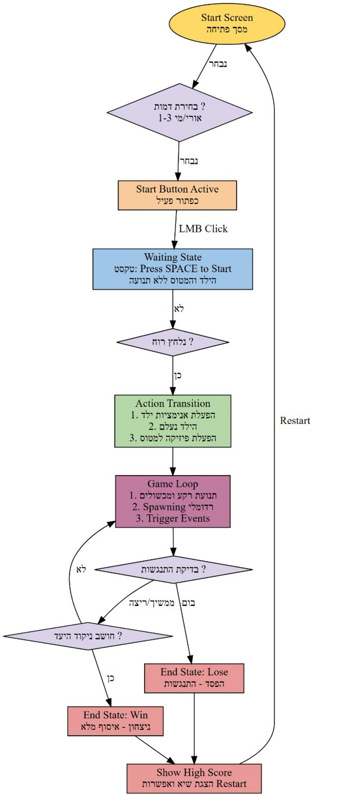

חזרה לפרויקטים
Flappy Origami
משחק Endless Runner ביוניטי, בהשראת Flappy Bird: ילד זורק אוריגמי לתוך מסדרון בית הספר, והשחקן מנווט אותו בין מכשולים.
- סוג
- משחק Endless Runner דו-ממדי
- התפקיד שלי
- פיתוח ביוניטי, עיצוב ומהלך המשחק
- כלים
- Unity, C#, GitHub Pages
- מסגרת
- קורס בתואר, HIT

האתגר
הדרישה הייתה לפתח משחק שמבוסס על משחק מוכר. לקחנו את Flappy Bird והוספנו לו עלילה ומכניקה משלנו: ילד זורק אוריגמי לתוך מסדרון בית הספר, והשחקן צריך להעביר אותו בין "מכשולים" מעולם בית הספר.
המשחק אינו לימודי. הוא מוצג כאן כהוכחה ליכולת פיתוח, ל-Game Design ולשליטה ב-Unity וב-C#, אותן יכולות שמשמשות אותי במשחקי למידה.
מה המשחק כולל
- בחירת דמות: שלושה סוגי אוריגמי (מטוס, סירה, ציפור). כל אחד משנה את הנראות ואת ה-Collider.
- פיזיקה: כוח כבידה ודחיפה כלפי מעלה בלחיצה על Space.
- יצירה דינמית של מכשולים, רקעים ובונוסים (ציון A+).
- ניהול מצבי משחק: פתיחה, אנימציית זריקה, ניצחון או הפסד, שיא אישי ואתחול.
- סאונד ו-UI: HUD, השתקה, וזיקוקים בשיא חדש.
מהלך המשחק
